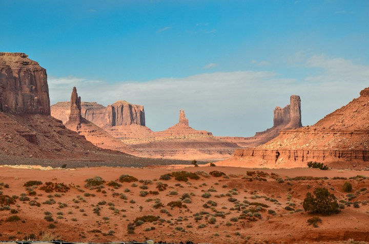
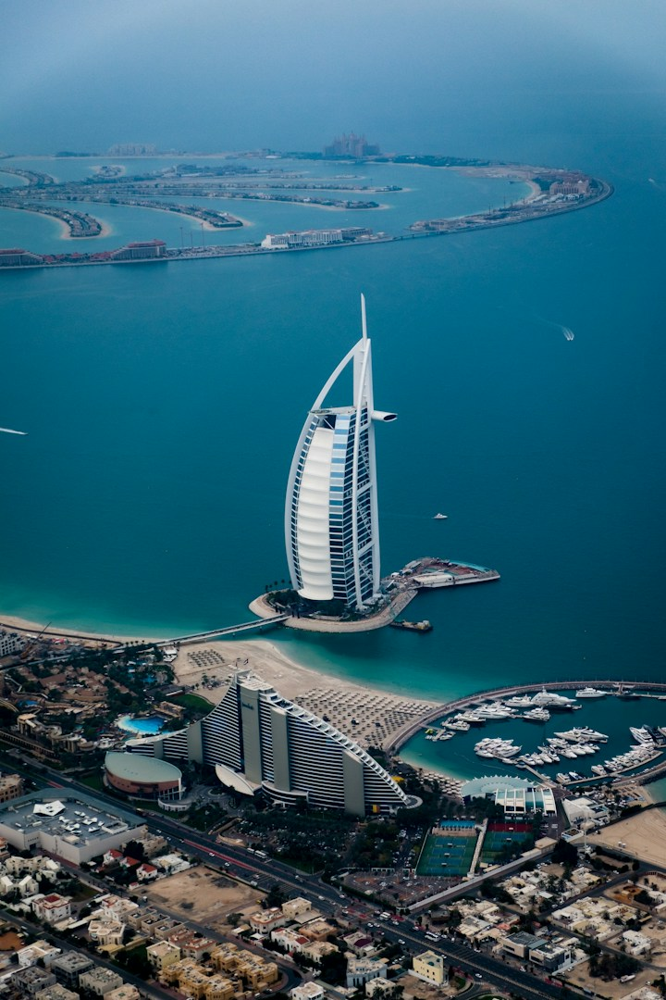
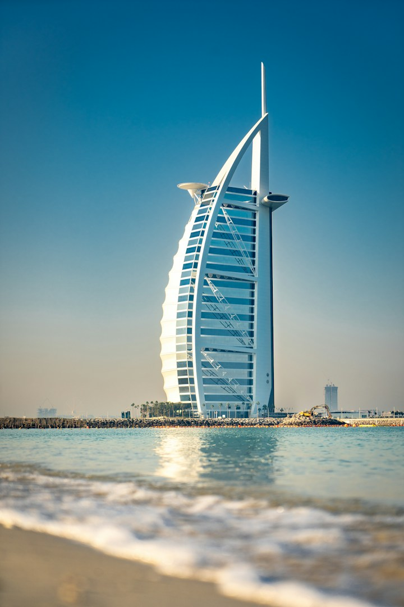
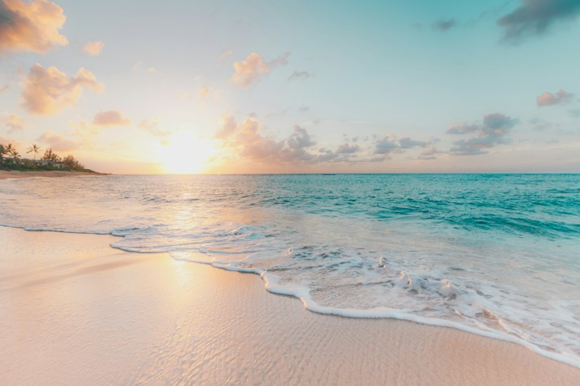

Attractions
Burj Khalifa: choose your observation deck
The official Burj Khalifa website distinguishes At the Top on Levels 124 and 125 from the SKY experience on Level 148.
Independent planning guideView details
Find your next experience, then explore the details in our Dubai guides.
The official Burj Khalifa website distinguishes At the Top on Levels 124 and 125 from the SKY experience on Level 148.

Visit Dubai describes safari options with different combinations of transport, dune driving, camp activities and meals.

The Visit Dubai booking portal lists Marina sightseeing and dinner cruises separately.

Visit Dubai presents Dubai Frame as a panoramic-view and sky-deck attraction.
Visit Dubai places Aquaventure at Atlantis, The Palm, and describes rides, children’s play areas and beach access.
Al Fahidi Historical Neighbourhood is featured by Visit Dubai as an Old Dubai destination.

Visit Dubai’s family itineraries span indoor activities, outdoor experiences and waterparks.
Choose one main attraction, such as Burj Khalifa or Dubai Frame, after comparing admissions.
No guides match your search. Try another term or clear the filters.
Destination images are travel inspiration. Booking, current prices and availability are provided by the venue or travel provider.